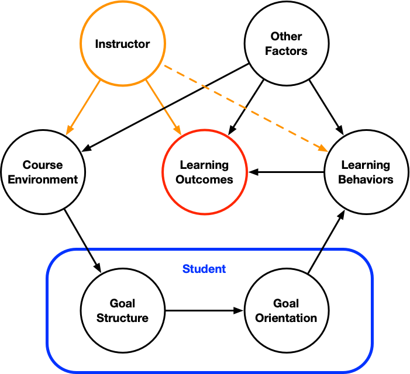

Goal Structure
In my July 3, 2023 post I suggested that the manner in which homework is presented can affect the way a student approaches completing a problem-solving assignment. Then in my July 18, 2023 post I described four goal orientations that influence the manner in which a student completes a problem-solving assignment. I described four achievement goal orientations that students may hold. Students with a performance approach goal orientation seek to demonstrate their ability. In problem-solving this can translate getting the correct answer being the goal. Learners with a mastery approach goal orientation seek to develop their ability. In problem-solving this can translate to knowing how to solve the problem. Students with a performance avoidance goal orientation seek to avoid demonstrating their inability. In problem-solving this can again translate to getting the correct answer as the goal. Finally students with a mastery avoidance goal orientation seek to avoid missing an opportunity to develop their ability. In problem-solving this can translate to knowing how to solve every variant of a given type of problem.
So if a student’s goal orientation influences how they approach a problem-solving assignment, and if the manner in which homework is presented can affect the student’s approach, it remains to relate the manner in which homework is presented to the goal orientation a student adopts. That is where goal structure comes in. In a nutshell, through their experiences in a course, students perceive a course goal structure. Perceived goal structure parallels achievement goal orientation. Students will perceive a performance approach, mastery approach, performance avoidance, or mastery avoidance goal structure. The goal structure a student perceives in a given course influences the goal orientation they adopt, and as already discussed, this affects their approach to assignments in the course. I think it is important to notice that goal structure is a perception. Different students taking the same course may perceive different goal structures. In part, that is because no two students have the exact same experiences while taking a course.
I tend to think about the linkages between what I do as an instructor and the extent to which the course learning objectives are met in terms of Figure 1. Starting with the instructor, shown in orange, I set the learning objectives for the course, and the manner in which I convey the information and teach the skills necessary to meet them clearly can affect the learning outcomes (how fully each student meets the objectives). I also play a role in establishing the course environment, and this is what I will focus on later in the post. However, it is critically important to recognize that I do not have exclusive control of either the course environment or the learning outcomes. There are many other factors that shape the course environment and learning outcomes.

The blue box in the figure is meant to convey that a student’s perception of the course goal structure and the goal orientation they adopt are internal to that student. I cannot change either of them directly. Instead, as the figure suggests, I can only try to establish a course environment that will be perceived as a mastery approach goal structure. I’ve already noted that each student’s goal orientation will affect the learning behaviors that they employ (right side of the figure). I can try to influence those learning behaviors (dashed orange arrow) by suggesting effective ways to study, etc. but ultimately learning behavior is under the student’s control. Again, there are a variety of other factors that will also impact the learning behaviors that the student ultimately employs. If I do a good job of conveying the necessary knowledge and skills and the student utilizes adaptive learning behaviors, the learning outcomes should meet or exceed the learning objectives.
This is the basis for my previous claim that the manner in which homework is presented can affect the way a student approaches completing a problem-solving activity. However, the way homework is presented is just one part of the course environment. If I alter the way I present homework assignments in ways suggesting a mastery approach goal structure, but every other aspect of the course environment suggests, for example, a performance approach goal structure, I can’t expect my alterations to be effective. It is necessary to holistically address the course environment if I hope to influence student goal orientations.
But for now, let’s just look at homework and how it is presented. The first thing to decide is what purpose or purposes you want the homework to serve. It is OK to use homework assignments as a means of assessing learning outcomes. I personally don’t think it is a very effective or accurate means of assessment, but as long as the students have opportunities to practice, fail and learn from their mistakes before being assessed, it is OK to use homework in this way. Students should be advised of the purpose of the assignment. I think many instructors think of homework as both a practice/learning activity and an assessment. If that’s the intended purpose, it is important to emphasize to the students that the homework is intended to be a practice/learning acitivty. To me this is a kind of mixed messaging that could result in a mastery-approach goal structure, but that is more likely to yield a performance approach goal structure.
In my problem-solving course the purpose of homework is completely for practice, learning, and self-assessment. I have found that if homework is optional, many students do not complete it. Therefore I “grade” homework assignments on effort and not on whether the correct answer was obtained. I give the solution to the problem to the students as a part of the assignment. I tell them to try to solve the problem as if they are taking an exam, and to only refer to the solution if they get stuck. They are instructed to compare their solution to the one I provided after they have completed the assignment to make sure they completed it correctly. I then ask them to write a brief reflection on the state of their understanding of that particular type of assignment and to identify things they can do if their understanding is not yet fully developed.
I believe that taken together, this way of presenting homework sends a clear message that the purpose of homework is to learn how to solve problems. I often point out that if they know how to solve a problem, then they will get the correct answer, but if they get the correct answer by using non-adaptive learning behaviors, they may not know how to solve the problem independently. This presentation of homework is one of many things I do in my problem-solving course to try to establish a course environment that is perceived by students as a mastery-approach goal structure.